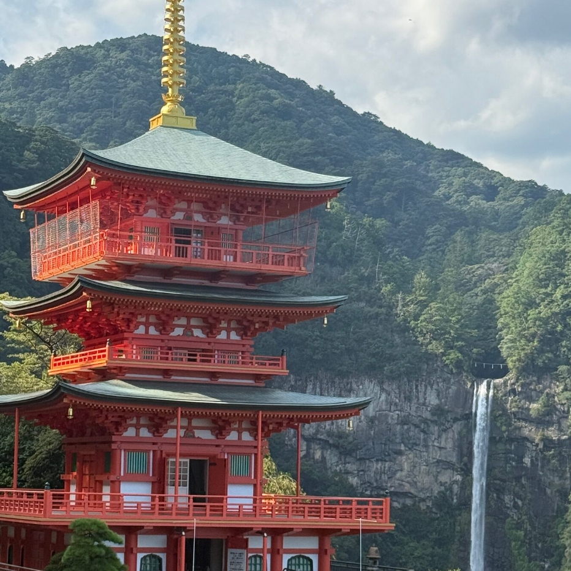

Explore Kumano Kodō
“Where ancient moss cobblestones and millennium cedar roots guide pilgrims into sacred primeval mists, shedding worldly sorrows in watercourses.”
The Emperor's Mud: Ari-no-Kumano-Mōde
For over a thousand years, Japanese emperors, aristocrats, and wandering commoners have walked barefoot through the primeval forests of the Kii Peninsula. They journeyed in endless processions so densely packed they were likened to lines of ants (Ari-no-Kumano-Mōde), seeking spiritual purification and profound inner rebirth.
Explore Itinerary Blueprint →
Plan Your Dream Adventure At Kumano Kodō
Curated three-pillar experiences crafted for discerning international travelers.

Kumano Beef & Charcoal Hearth
嚴選紀州特產頂級黑毛熊野牛，以紀州備長炭慢火炙烤，佐以吉野川天然湧水釜飯與四季旬野菜。
Read More ⟶Nachi Falls & Primeval Shinto
落差 133 公尺的日本第一神聖名瀑，自古被視為神明本體，與青岸渡寺三重塔同框如幽玄畫卷。
Read More ⟶
Island Sanctuaries & Onsen
坐落於太平洋內灣孤島的名宿，乘專用接駁船登島，在海濤拍岸的露天紀州潮聞風呂中洗滌疲憊。
Read More ⟶
Find your perfect stay
Kumano Kodō offers secluded island ryokans and historic mountain retreats where natural sulfuric thermal waters soothe exhausted pilgrims after days on cedar stone paths.
Explore Sanctuaries →
Taste the culinary heritage
Savor A5 Kumano Wagyu seared over white Kishu Binchōtan charcoal, local Mehari-zushi wrapped in pickled mustard leaves, and fresh Pacific red sea bream.
Explore Culinary →Explore the Sacred Trails in Complete Serenity
Traverse mountain passes and remote thermal villages in our private Toyota Alphard fleet with multilingual chauffeurs and luggage forwarding.
- ✔ Toyota Alphard 7-Seater / Hiace 10-Seater Executive Fleet
- ✔ Door-to-door luggage transit between mountain ryokans
- ✔ Private airport transfers from Kansai (KIX) & Nanki-Shirahama
Curated 1, 2, & 3-Day Pilgrimage Blueprint
Arrival & The Ancient Gate of Daimon-zaka
Private transfer to Daimon-zaka cobblestone stone stairway. Ascend through 800-year-old Meoto Sugi cedar trees to Kumano Nachi Taisha and Nachi Primeval Falls.
Kumano Hongū Taisha & Healing Thermal Springs
Hike along the Nakahechi trail into Hongū Taisha. Soak in the ancient thermal waters of Yunomine Onsen's Tsuboyu, the only World Heritage bath on earth.
Kumano River Sandanbo Sail & Pacific Retreat
Board a traditional wooden Sandanbo sailboat drifting down the sacred Kumano River to Hayatama Taisha, concluding with coastal onsen overlooking the Pacific.